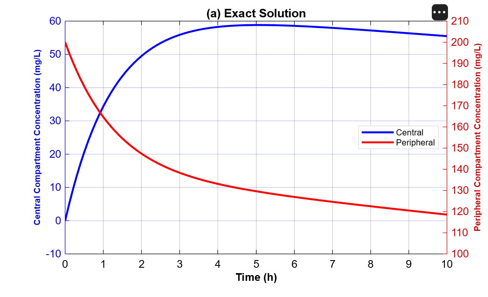
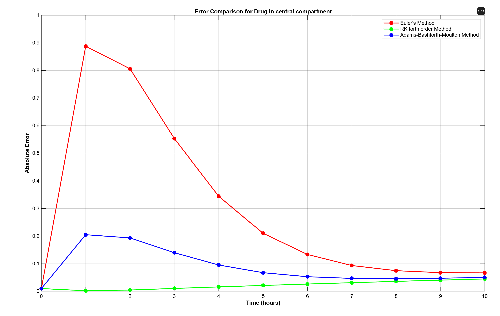
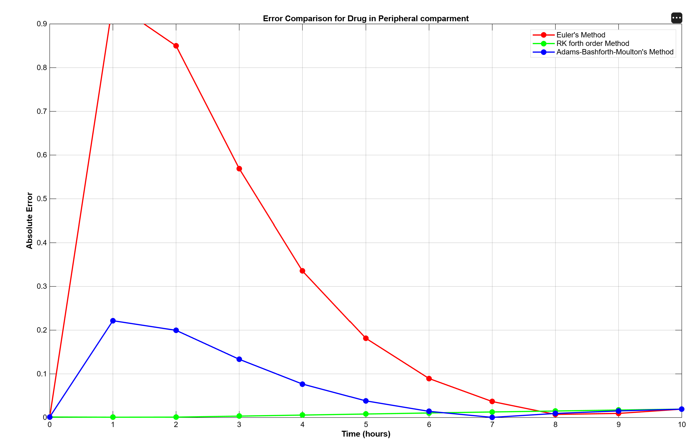
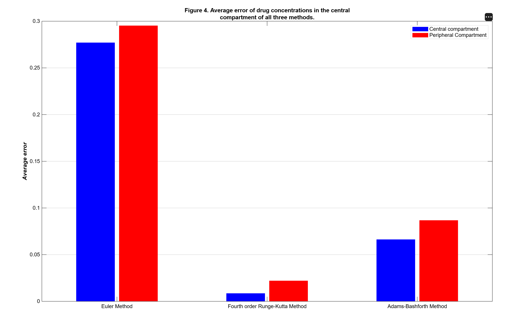

MATLAB Simulation
Replicating the figures from Fatima et al. (2025): drug concentration profiles and error comparisons across three numerical methods.
Reproducing the Paper's Results
Using MATLAB R2026a, we independently reproduced the simulation results from the original research paper. The same parameter set and initial conditions were applied: k10 = 0.05 h⁻¹, k12 = 0.50 h⁻¹, k21 = 0.25 h⁻¹, with Cc(0) = 0 and Cp(0) = 200 mg/L, over a 10-hour simulation window at step size Δt = 0.1 h.
All three numerical methods were implemented from scratch alongside the analytical solution, and results were validated against Tables 1–5 from the paper.
Simulation Parameters
Figure1: Drug Concentration Profiles
Each subplot shows the central compartment (left axis, blue) and peripheral compartment (right axis, red) over 10 hours.

Absolute Error Over Time
Absolute error at each integer hour (t = 0 to 10) comparing all three numerical methods against the analytical solution.
Figure2: Central Compartment Error

Figure3: Peripheral Compartment Error

Figure4: Average Error by Method

| Method | Central Avg. | Peripheral Avg. | Overall Average | Overall (%) |
|---|---|---|---|---|
| Euler Method | 0.2771 | 0.2953 | 0.2862 | 28.62% |
| Adams–Bashforth–Moulton | 0.0663 | 0.0868 | 0.0766 | 7.66% |
| 4th-Order Runge–Kutta | 0.0086 | 0.0221 | 0.0154 | 1.54% |
MATLAB Code Overview
The complete MATLAB script implements the exact analytical solution via eigendecomposition, then runs all three numerical methods independently, computes error vectors, and generates all four figure panels. Key implementation steps:
Analytical Solution
The matrix A is passed to MATLAB's eig() function to obtain eigenvalues and eigenvectors. Coefficients are solved from initial conditions using V \ [Cc0; Cp0].
Numerical Methods
Each method is implemented as a forward loop over the time vector. RK4 computes four intermediate slope estimates per step; ABM bootstraps its first four values with RK4.
Error Analysis
Absolute errors are computed at every step (abs(numerical - exact)). Integer-hour values are sampled to match the paper's tables. Average errors are computed over all time points.